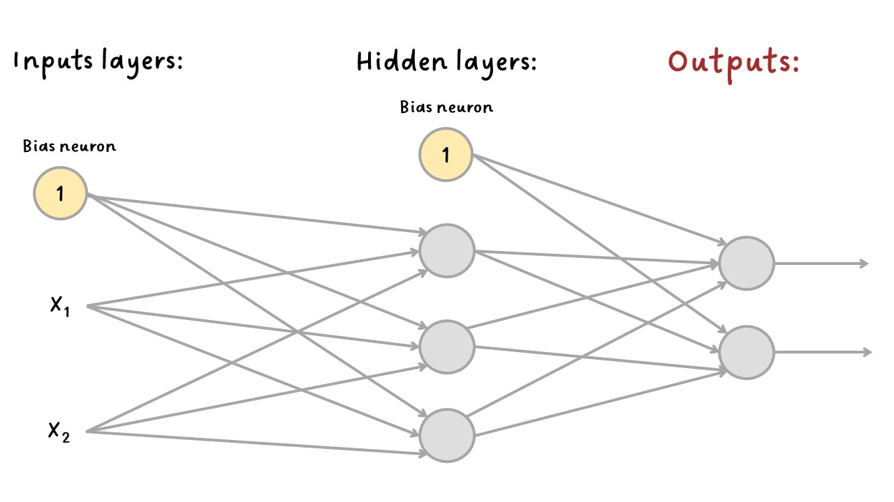
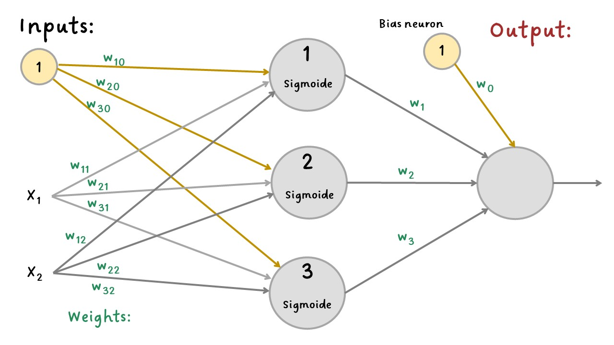
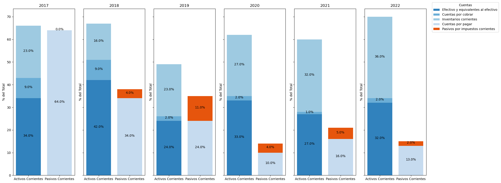
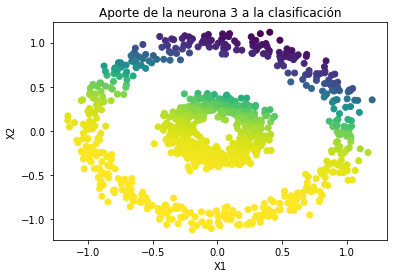
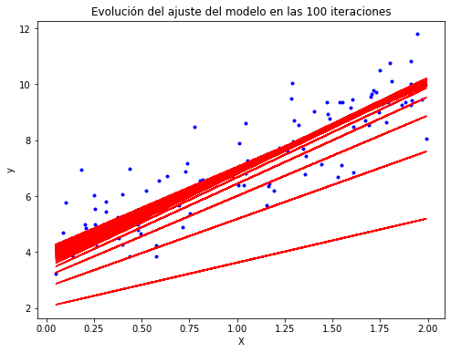
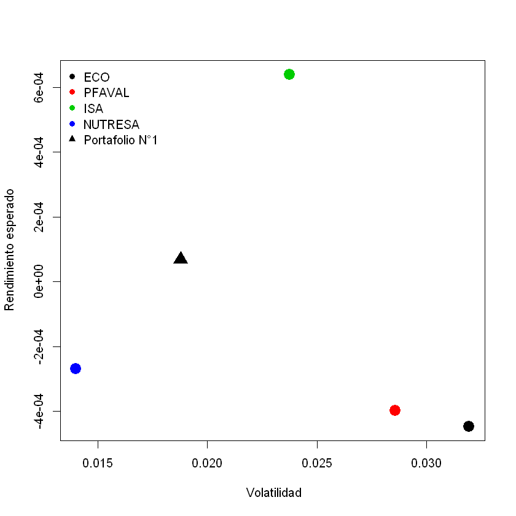

Perceptrón multicapa¶
El perceptrón multicapa (MLP - Multilayer Perceptron) se compone de una capa de entrada (input layer), una o más capas de neuronas, denominadas capas ocultas (hidden layers) y una capa de salida (output layer). Las capas cercanas a la capa de entrada generalmente se denominan capas inferiores (lower layers), y las cercanas a las salidas se denominan capas superiores (upper layers).

MLP¶
La señal fluye solo en una dirección (de las entradas a las salidas), por lo que esta arquitectura es un ejemplo de una red neuronal feedforward (FNN).
Cuando una RNA contiene una pila profunda de capas ocultas, se denomina red neuronal profunda (deep neural network - DNN). El Deep Learning se enfoca en el campo del aprendizaje profundo que contiene modelos de pilas profundas, incluso, algunos relacionan al Deep Learning con las redes neuronales más simples.
En 1986 se introdujo un algoritmo para entrenar los MLP llamado propagación hacia atrás (backpropagation) que todavía se usa en la actualidad y es el algoritmo con el que se optimizan los parámetros (Gradient Descent).
Backpropagation:¶
El entrenamiento de la RNA por medio del backpropagation utiliza la técnica del gradiente descendente (Gradient Descent) el cual es una técnica eficiente para calcular los gradientes automáticamente en solo dos pasadas por la red: una llamada forward pass y otra backward pass.
El backpropagation calcula el gradiente del error de la RNA con respecto a cada parámetro del modelo. En otras palabras, puede hallar cómo se debe ajustar cada peso de conexión y cada término de bias para reducir el error. Una vez que tiene estos gradientes, simplemente realiza un paso de gradiente descendente regular y todo el proceso se repite hasta que la red converge a la solución.
En resumen, para cada instancia de entrenamiento, el algoritmo de backpropagation primero hace una predicción (forward pass) y mide el error, luego pasa por cada capa en sentido inverso para medir la contribución de error de cada conexión (backward pass), y finalmente modifica los pesos de conexión para reducir el error (Gradient Descent step).
Es importante inicializar aleatoriamente todos los pesos de conexión de las capas ocultas, de lo contrario, el entrenamiento fallará. Por ejemplo, si inicializa todos los pesos en cero, todas las neuronas en una capa determinada serán perfectamente idénticas (se crea una simetría) y, por lo tanto, el backpropagation las afectará exactamente de la misma manera, por lo que permanecerán idénticas. En otras palabras, a pesar de tener cientos de neuronas por capa, el modelo actuará como si tuviera solo una neurona por capa, en cambio, si inicializa aleatoriamente los pesos, rompe la simetría y permite que el backpropagation entrene a un equipo diverso de neuronas.
Ejemplo MLP:¶
Se hará un ejemplo de clasificación binaria con función de activación sigmoide en la capa oculta y la capa de salida no tendrá función de activación.
Se tendrá el supuesto de que los pesos ya se hallaron con el método del gradiente descendente.

EjemploRNA¶
import numpy as np
import matplotlib.pyplot as plt
from sklearn.datasets import make_circles
X, y = make_circles(n_samples=1000, factor=0.3, noise=0.07, random_state=0)
plt.scatter(X[:, 0], X[:, 1], c=y)
plt.xlabel("X1")
plt.ylabel("X2");

Pesos hallados con gradiente descendente:
W_1: Pesos de la neurona 1 para X1, X2 y bias.
W_2: Pesos de la neurona 2 para X1, X2 y bias.
W_3: Pesos de la neurona 3 para X1, X2 y bias.
W_out: Pesos de la neurona de salida para los resultados de la
nuerona 1 y 2, y para bias.
W_1 = [-4.559541, -1.2554122, -2.599874]
W_2 = [-3.6836078, 3.8130093, 2.7966402]
W_3 = [-1.2270935, -4.357733, 2.4618955]
W_out = [-1.6436539, 1.5664514, 1.6613054, -1.7469823]
Neurona 1:
Donde,
\(w_{11}\): es el peso de la neurona 1 para la variable \(X_1\).
\(w_{12}\): es el peso de la neurona 1 para la variable \(X_2\).
\(w_{10}\): es el peso de la neurona 1 para el bias.
neuron_1 = 1 / (1 + np.exp(-(X[:, 0] * W_1[0] + X[:, 1] * W_1[1] + W_1[2])))
plt.scatter(X[:, 0], X[:, 1], c=neuron_1)
plt.xlabel("X1")
plt.ylabel("X2")
plt.title("Aporte de la neurona 1 a la clasificación");

Neurona 2:
Donde,
\(w_{21}\): es el peso de la neurona 2 para la variable \(X_1\).
\(w_{22}\): es el peso de la neurona 2 para la variable \(X_2\).
\(w_{20}\): es el peso de la neurona 2 para el bias.
neuron_2 = 1 / (1 + np.exp(-(X[:, 0] * W_2[0] + X[:, 1] * W_2[1] + W_2[2])))
plt.scatter(X[:, 0], X[:, 1], c=neuron_2)
plt.xlabel("X1")
plt.ylabel("X2")
plt.title("Aporte de la neurona 2 a la clasificación");

Neurona 3:
Donde,
\(w_{31}\): es el peso de la neurona 3 para la variable \(X_1\).
\(w_{32}\): es el peso de la neurona 3 para la variable \(X_2\).
\(w_{30}\): es el peso de la neurona 3 para el bias.
neuron_3 = 1 / (1 + np.exp(-(X[:, 0] * W_3[0] + X[:, 1] * W_3[1] + W_3[2])))
plt.scatter(X[:, 0], X[:, 1], c=neuron_3)
plt.xlabel("X1")
plt.ylabel("X2")
plt.title("Aporte de la neurona 3 a la clasificación");

Neurona output:
Donde,
\(w_1\): es el peso de la neurona output para la entrada de la neurona 1.
\(w_2\): es el peso de la neurona output para la entrada de la neurona 2.
\(w_3\): es el peso de la neurona output para la entrada de la neurona 3.
\(w_3\): es el peso de la neurona output para el bias.
output = neuron_1 * W_out[0] + neuron_2 * W_out[1] + neuron_3 * W_out[2] + W_out[3]
plt.scatter(X[:, 0], X[:, 1], c=output)
plt.xlabel("X1")
plt.ylabel("X2")
plt.title("Resultado final");

Redondeo del resultado para obtener salidas 0 y 1:
output2 = np.around(output)
plt.scatter(X[:, 0], X[:, 1], c=output2)
plt.xlabel("X1")
plt.ylabel("X2")
plt.title("Resultado final");

Predicción:
X_new = [0, 1]
neuron_1 = 1 / (1 + np.exp(-(X_new[0] * W_1[0] + X_new[1] * W_1[1] + W_1[2])))
neuron_2 = 1 / (1 + np.exp(-(X_new[0] * W_2[0] + X_new[1] * W_2[1] + W_2[2])))
neuron_3 = 1 / (1 + np.exp(-(X_new[0] * W_3[0] + X_new[1] * W_3[1] + W_3[2])))
output = neuron_1 * W_out[0] + neuron_2 * W_out[1] + neuron_3 * W_out[2] + W_out[3]
output
0.00022431300015113287
Ejercicio:¶
Note que las neuronas de la primera capa oculta aprenden patrones simples, mientras que las neuronas de la segunda capa oculta aprenden a combinar los patrones simples de la primera capa oculta en patrones más complejos. En general, entre más capas tenga, más complejos pueden ser los patrones.
¿Es posible encontrar la solución de manera más rápida cambiando la función de activación?
¿Cómo son la forma de los límites con la función ReLU?
Cambie la arquitectura de la red con una sola capa oculta de 3 neuronas. A veces en el entrenamiento el modelo se atasca en un mínimo local. Antes de hacer esto reinicar la red con el botón de Reset.
¿Qué pasa si ahora la red solo tiene dos neuronas en la capa oculta? ¿El modelo tendrá suficientes parámetros?
Ahora aumente a ocho neuronas en la capa oculta. Tenga en cuenta que ahora es consistentemente rápido y nunca se atasca. Esto destaca un hallazgo importante en la teoría de redes neuronales: las redes neuronales grandes casi nunca se atascan en mínimos locales, e incluso cuando lo hacen, estos óptimos locales son casi tan buenos como el óptimo global. Sin embargo, aún pueden quedarse atascados en mesetas largas durante mucho tiempo.
Selecciona el conjunto de datos en espiral y cambie la arquitectura de la red para tener cuatro capas ocultas con ocho neuronas cada una. El entrenamiento conllevará más tiempo y se podría estancar durante largos períodos de tiempo. Note también que las neuronas de las capas más altas (a la derecha) tienden a evolucionar más rápido que las neuronas de las capar más bajas (a la izquierda). Este comportamiento se llama vanishing gradients, esto significa que existe un riesgo que desaparezcan los gradientes en las redes profundas. Esto es un tema importante en las estructuras modernas de las RNA (Deep Learning).